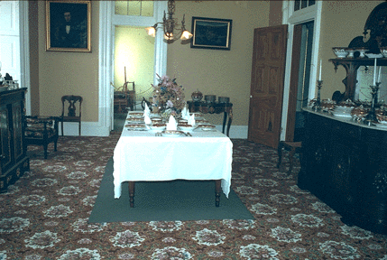

J.R. Burrows & Company:
Floral Cartouche Carpet

Dining room at Ham House, Dubuque County Historical Society,
Dubuque, Iowa. Design 5134/10, Floral Cartouche, c. 1854.
Go to Work by J.R. Burrows &
Company
Go to J.R. Burrows & Company Main
Page
 J.R.
Burrows & Company
J.R.
Burrows & Company
P.O. Box 522
Rockland, Massachusetts 02370
E-mail:
merchant@burrows.com
Phone: (800) 347-1795; Phone: (781) 982-1812 Fax: (781) 982-1636